NRES 776 Lab 3
Data wrangling
Sunny Tseng
Welcome to your third R lab!
Our schedule today
Announcements (5 min)
Discussion paper presentation (45 mins)
Introduction to tidyverse (15 min)
Data I/O (5 min)
Data wrangling (40 min)
Quiet time for practice (60 min)
Announcements
- Create a R project, and a folder (named data) inside it.
- Save the .csv files inside the data folder.
- Packages we need today
here: for file pathtidyverse: for data I/O and data wranglingpalmerpenguins: you know this one
Some beautiful plots from lab 2
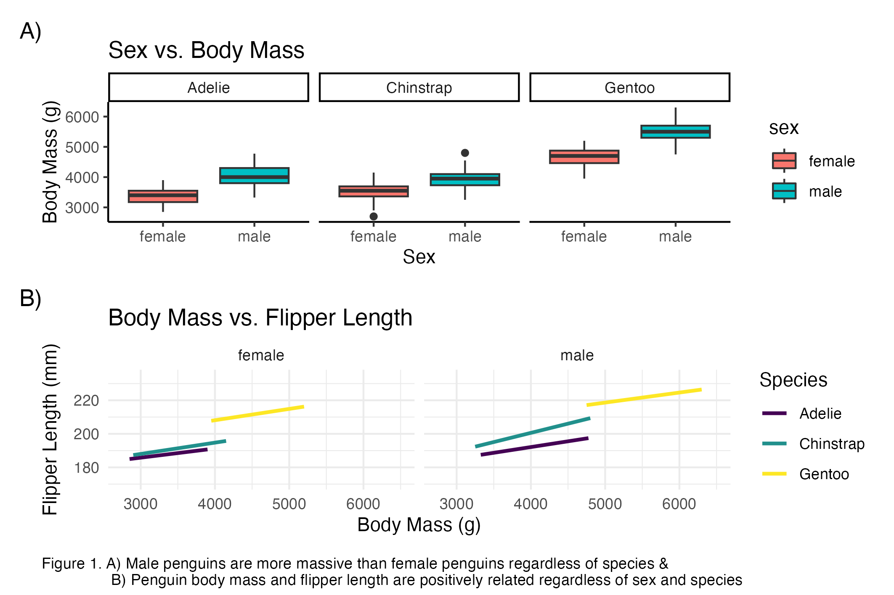Some beautiful plots from lab 2
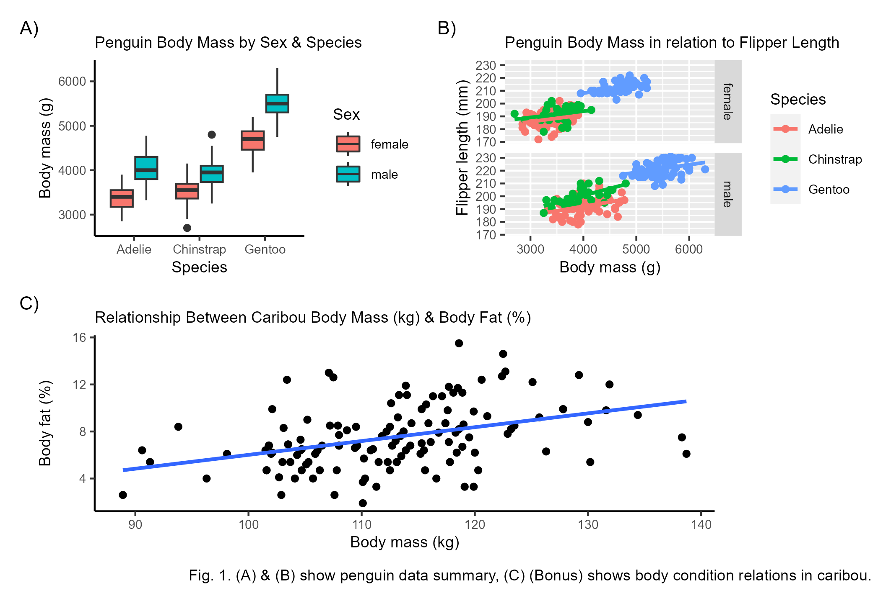Discussion paper presentation
- Abigail Doerksen
- Julia Bizon
- Temitope Olufemi
The universe of tidyverse: background
Data life cycle
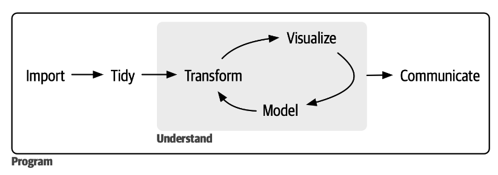We have learned data “visualization” and data “import” (sort of) in lab 2
Today we want to cover the “tidy” and “transform” part, which all together called “data wrangling”
In the world of R, each of this step has some associated packages
What is tidyverse?
There are some packages that you are likely to use in everyday data analysis:
readrpackage: for importing data in Rggplot2package: for making graphics, data visualizationdplyrpackage: manipulating data framespurrrpackage: working with functions- Full list of tidyverse packages is shown here: https://www.tidyverse.org/packages/
These are called core tidyverse, and we can load all the core packages at once by installing and loading the tidyverse package:
What’s tidyverse?
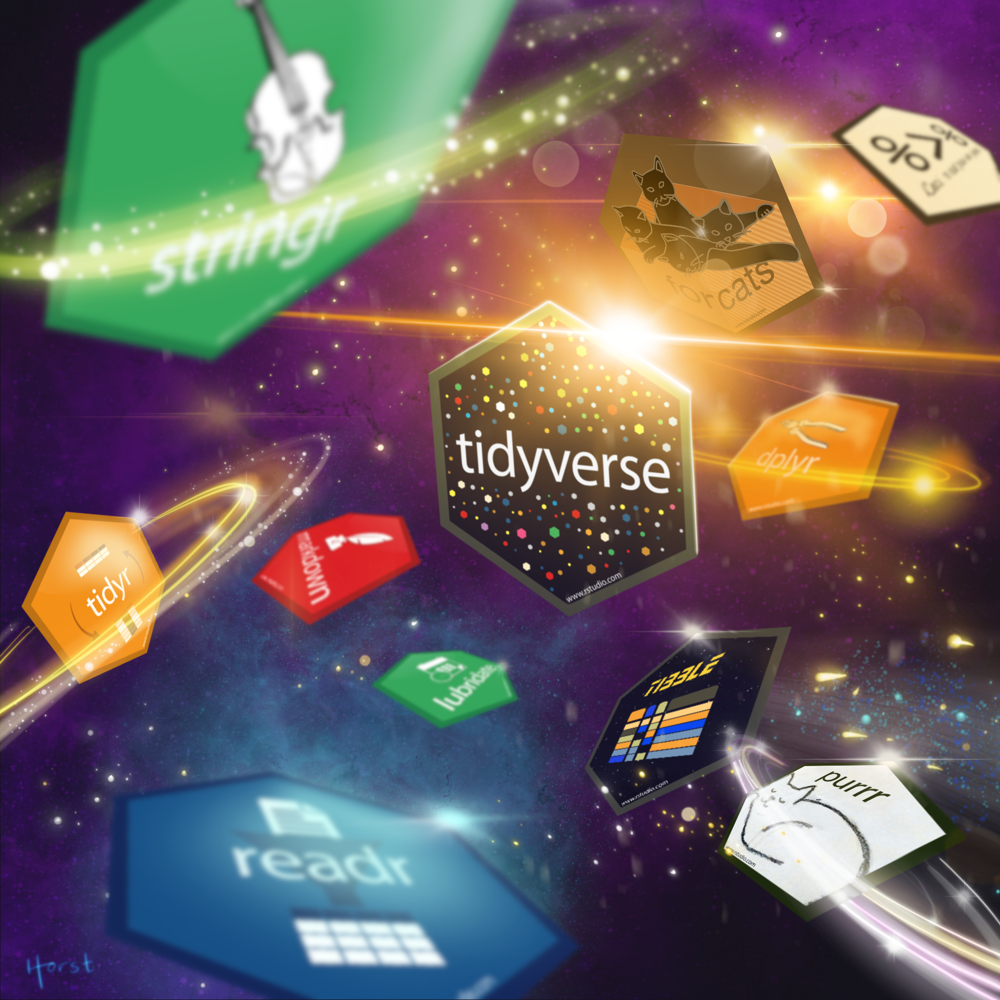
Tidy data
We say that a data table is in tidy format if each row represents one observation and columns represent the different variables available for each of these observations.
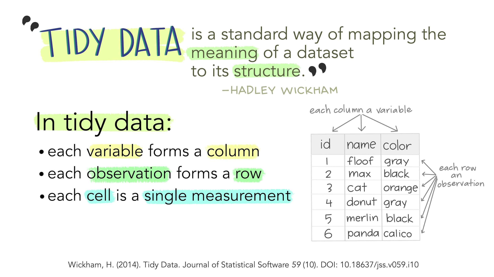
Messy data
Every messy data set is messy in its own way. - Hadley Wickham
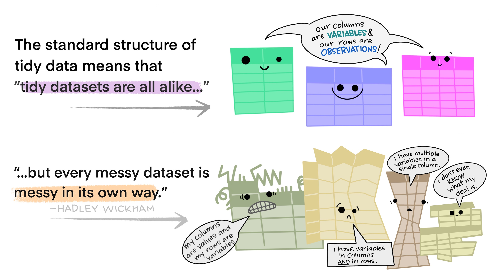
Common characteristics of messy data
Commas in numeric values
Numeric values stored as character data types
Duplicate rows
Misspellings
Capitalization (e.g., sparrow, Sparrow)
Inaccuracies
White space
Missing data
Zeros instead of null values
… and many more
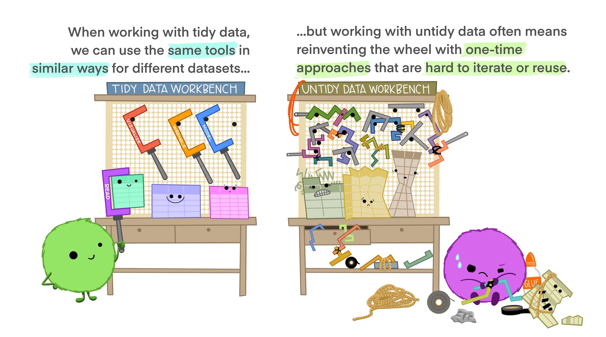
Pipe
In R we can perform a series of operations by sending the results of one function to another using what is called the pipe operator:
%>%or|>
A thing I will be using through out this lab…
Think it like the English word “then”.
First, we are dogs
Then, drop one ear
Then, rotate your head for max cuteness
We will get treats!
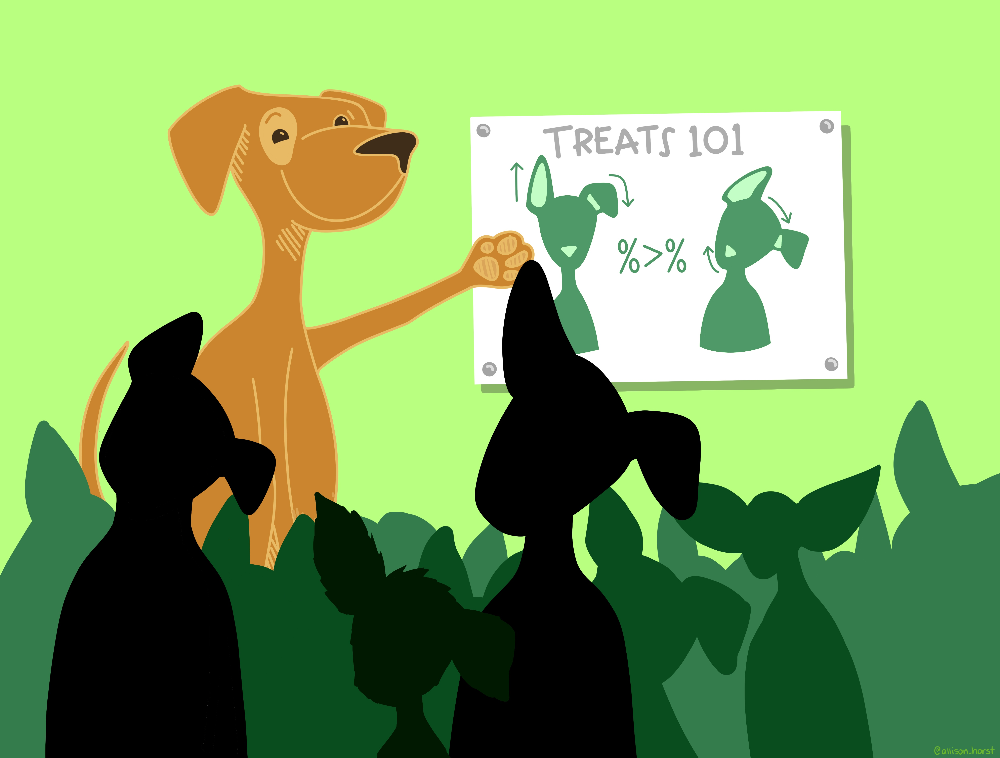
Pipe: %>% or |>
Let’s say, we want to find the mean of the petal length column in the iris data set.
In base R:
[1] 3.758You can also do:
- In this lab, I am going to use
%>%for code demonstration, but feel free to use whatever you feel comfortable and efficient.
Pipe: %>% or |>
- Pipe is especially powerful when there are multiple operations need to be applied to an object.
In base R
iris_sub <- head(iris, n = 50)
iris_sub_sepal_length <- iris_sub$Sepal.Length
iris_sub_sepal_length_mean <- mean(iris_sub_sepal_length, na.rm = TRUE)
iris_sub_sepal_length_mean[1] 5.006In tidyverse, using pipe:
Base R vs tidyverse?
There is no right or wrong or which way should be used. And both can achieve same tasks. But once you do much more coding, you might find tidyverse coding makes data analysis a bit easier. 😃
Base R: all the functionality that comes built into the R programming language
Use intermediate objects
Use
data.framedata type to manage data framesUse
read.csv()to import filesUse
[ , col]or$to isolate column… and more
Tidyverse: a collection of packages that add onto R, with its own focus on data analysis.
- Use pipes
Use
tibbledata type to manage data framesUse
read_csv()to import filesUse
pull()function to isolate column… and more
Data I/O: with csv files
read_csv()write_csv()
Overview
With readr and readxl, you will be able to use the following functions to read spreadsheets into R.
| Function | Format | Typical suffix |
|---|---|---|
read_delim() |
general text file format, must define delimiter | .txt |
read_csv() |
comma separated values | .csv |
read_csv2() |
semicolon separated values | .csv |
read_tsv() |
tab delimited separated values | .tsv |
read_table() |
white space separated values | .txt |
read_excel() |
auto detect the format for Microsoft excel sheets | .xlsx or .xls |
Read CSVs
read_csv()take one necessary argument, which isfile, a path to a file.
here()can help produce the file relative pathin this example, I have my file
my_data.csvlocates within a folder calleddata
# A tibble: 48 x 6
rock_ID type area peri shape perm
<dbl> <chr> <dbl> <dbl> <dbl> <dbl>
1 1 Type D 4990 2792. 0.0903 6.3
2 2 Type A 7002 3893. 0.149 6.3
3 3 Type A 7558 3931. 0.183 6.3
4 4 Type C 7352 3869. 0.117 6.3
5 5 Type C 7943 3949. 0.122 17.1
6 6 Type B 7979 4010. 0.167 17.1
7 7 Type D 9333 4346. 0.190 17.1
8 8 Type B 8209 4345. 0.164 17.1
9 9 Type A 8393 3682. 0.204 119
10 10 Type A 6425 3099. 0.162 119
# ... with 38 more rowsWrite CSVs
csv is the most commonly used because of its simplicity and compatibility
write_csv()takes two necessary argumentsx, the data frame object you want to export, andfile, the path you want to save the file to.
Now, check your folder, and you should find a file got saved with the name my_data.csv.
Data wrangling: rows
filter()arrange()distinct()
filter()
Keep rows that match condition(s). Input a tibble, return a filtered tibble.

filter()
Keep rows where bill length value larger than 18
# A tibble: 130 x 8
species island bill_length_mm bill_depth_mm flipper_~1 body_~2 sex year
<fct> <fct> <dbl> <dbl> <int> <int> <fct> <int>
1 Adelie Torgersen 39.1 18.7 181 3750 male 2007
2 Adelie Torgersen 36.7 19.3 193 3450 fema~ 2007
3 Adelie Torgersen 39.3 20.6 190 3650 male 2007
4 Adelie Torgersen 39.2 19.6 195 4675 male 2007
5 Adelie Torgersen 34.1 18.1 193 3475 <NA> 2007
6 Adelie Torgersen 42 20.2 190 4250 <NA> 2007
7 Adelie Torgersen 38.6 21.2 191 3800 male 2007
8 Adelie Torgersen 34.6 21.1 198 4400 male 2007
9 Adelie Torgersen 38.7 19 195 3450 fema~ 2007
10 Adelie Torgersen 42.5 20.7 197 4500 male 2007
# ... with 120 more rows, and abbreviated variable names 1: flipper_length_mm,
# 2: body_mass_gfilter()
Keep rows that is NOT measured from Torgersen island
# A tibble: 292 x 8
species island bill_length_mm bill_depth_mm flipper_len~1 body_~2 sex year
<fct> <fct> <dbl> <dbl> <int> <int> <fct> <int>
1 Adelie Biscoe 37.8 18.3 174 3400 fema~ 2007
2 Adelie Biscoe 37.7 18.7 180 3600 male 2007
3 Adelie Biscoe 35.9 19.2 189 3800 fema~ 2007
4 Adelie Biscoe 38.2 18.1 185 3950 male 2007
5 Adelie Biscoe 38.8 17.2 180 3800 male 2007
6 Adelie Biscoe 35.3 18.9 187 3800 fema~ 2007
7 Adelie Biscoe 40.6 18.6 183 3550 male 2007
8 Adelie Biscoe 40.5 17.9 187 3200 fema~ 2007
9 Adelie Biscoe 37.9 18.6 172 3150 fema~ 2007
10 Adelie Biscoe 40.5 18.9 180 3950 male 2007
# ... with 282 more rows, and abbreviated variable names 1: flipper_length_mm,
# 2: body_mass_gfilter()
Multiple conditions
# A tibble: 68 x 8
species island bill_length_mm bill_depth_mm flipper_l~1 body_~2 sex year
<fct> <fct> <dbl> <dbl> <int> <int> <fct> <int>
1 Chinstrap Dream 46.5 17.9 192 3500 fema~ 2007
2 Chinstrap Dream 50 19.5 196 3900 male 2007
3 Chinstrap Dream 51.3 19.2 193 3650 male 2007
4 Chinstrap Dream 45.4 18.7 188 3525 fema~ 2007
5 Chinstrap Dream 52.7 19.8 197 3725 male 2007
6 Chinstrap Dream 45.2 17.8 198 3950 fema~ 2007
7 Chinstrap Dream 46.1 18.2 178 3250 fema~ 2007
8 Chinstrap Dream 51.3 18.2 197 3750 male 2007
9 Chinstrap Dream 46 18.9 195 4150 fema~ 2007
10 Chinstrap Dream 51.3 19.9 198 3700 male 2007
# ... with 58 more rows, and abbreviated variable names 1: flipper_length_mm,
# 2: body_mass_gfilter()
Remove rows with missing values
This doesn’t work, because NA is not comparable
Do this, using is.na() function
Or this, using drop_na() function
filter()
Keep rows that contain elements of interest
species_vector <- c("King", "Emperor", "Snares", "Chinstrap")
penguins %>%
filter(species %in% species_vector)# A tibble: 68 x 8
species island bill_length_mm bill_depth_mm flipper_l~1 body_~2 sex year
<fct> <fct> <dbl> <dbl> <int> <int> <fct> <int>
1 Chinstrap Dream 46.5 17.9 192 3500 fema~ 2007
2 Chinstrap Dream 50 19.5 196 3900 male 2007
3 Chinstrap Dream 51.3 19.2 193 3650 male 2007
4 Chinstrap Dream 45.4 18.7 188 3525 fema~ 2007
5 Chinstrap Dream 52.7 19.8 197 3725 male 2007
6 Chinstrap Dream 45.2 17.8 198 3950 fema~ 2007
7 Chinstrap Dream 46.1 18.2 178 3250 fema~ 2007
8 Chinstrap Dream 51.3 18.2 197 3750 male 2007
9 Chinstrap Dream 46 18.9 195 4150 fema~ 2007
10 Chinstrap Dream 51.3 19.9 198 3700 male 2007
# ... with 58 more rows, and abbreviated variable names 1: flipper_length_mm,
# 2: body_mass_garrange()
Order rows using column values
# A tibble: 344 x 8
species island bill_length_mm bill_depth_mm flipper_len~1 body_~2 sex year
<fct> <fct> <dbl> <dbl> <int> <int> <fct> <int>
1 Gentoo Biscoe 59.6 17 230 6050 male 2007
2 Gentoo Biscoe 55.9 17 228 5600 male 2009
3 Gentoo Biscoe 55.1 16 230 5850 male 2009
4 Gentoo Biscoe 54.3 15.7 231 5650 male 2008
5 Gentoo Biscoe 53.4 15.8 219 5500 male 2009
6 Gentoo Biscoe 52.5 15.6 221 5450 male 2009
7 Gentoo Biscoe 52.2 17.1 228 5400 male 2009
8 Gentoo Biscoe 52.1 17 230 5550 male 2009
9 Gentoo Biscoe 51.5 16.3 230 5500 male 2009
10 Gentoo Biscoe 51.3 14.2 218 5300 male 2009
# ... with 334 more rows, and abbreviated variable names 1: flipper_length_mm,
# 2: body_mass_gdistinct()
Keep distinct/unique rows
# A tibble: 5 x 8
species island bill_length_mm bill_depth_mm flipper~1 body_~2 sex year
<fct> <fct> <dbl> <dbl> <int> <int> <fct> <int>
1 Adelie Torgersen 39.1 18.7 181 3750 male 2007
2 Adelie Biscoe 37.8 18.3 174 3400 fema~ 2007
3 Adelie Dream 39.5 16.7 178 3250 fema~ 2007
4 Gentoo Biscoe 46.1 13.2 211 4500 fema~ 2007
5 Chinstrap Dream 46.5 17.9 192 3500 fema~ 2007
# ... with abbreviated variable names 1: flipper_length_mm, 2: body_mass_gYour turn
Remove all the rows that have any
NAin their valuesKeep observations that measured in 2007
Arrange the rows based on flipper length, from high to low
# A tibble: 103 x 8
species island bill_length_mm bill_depth_mm flipper_len~1 body_~2 sex year
<fct> <fct> <dbl> <dbl> <int> <int> <fct> <int>
1 Gentoo Biscoe 50 16.3 230 5700 male 2007
2 Gentoo Biscoe 59.6 17 230 6050 male 2007
3 Gentoo Biscoe 48.7 15.1 222 5350 male 2007
4 Gentoo Biscoe 47.3 15.3 222 5250 male 2007
5 Gentoo Biscoe 49.2 15.2 221 6300 male 2007
6 Gentoo Biscoe 50 15.3 220 5550 male 2007
7 Gentoo Biscoe 46.7 15.3 219 5200 male 2007
8 Gentoo Biscoe 50 15.2 218 5700 male 2007
9 Gentoo Biscoe 50.2 14.3 218 5700 male 2007
10 Gentoo Biscoe 49.3 15.7 217 5850 male 2007
# ... with 93 more rows, and abbreviated variable names 1: flipper_length_mm,
# 2: body_mass_gYour turn
Remove all the rows that have any
NAin their valuesKeep observations that measured in 2007
Arrange the rows based on flipper length, from high to low
# A tibble: 103 x 8
species island bill_length_mm bill_depth_mm flipper_len~1 body_~2 sex year
<fct> <fct> <dbl> <dbl> <int> <int> <fct> <int>
1 Gentoo Biscoe 50 16.3 230 5700 male 2007
2 Gentoo Biscoe 59.6 17 230 6050 male 2007
3 Gentoo Biscoe 48.7 15.1 222 5350 male 2007
4 Gentoo Biscoe 47.3 15.3 222 5250 male 2007
5 Gentoo Biscoe 49.2 15.2 221 6300 male 2007
6 Gentoo Biscoe 50 15.3 220 5550 male 2007
7 Gentoo Biscoe 46.7 15.3 219 5200 male 2007
8 Gentoo Biscoe 50 15.2 218 5700 male 2007
9 Gentoo Biscoe 50.2 14.3 218 5700 male 2007
10 Gentoo Biscoe 49.3 15.7 217 5850 male 2007
# ... with 93 more rows, and abbreviated variable names 1: flipper_length_mm,
# 2: body_mass_gData wrangling: columns
mutate()select()rename()relocate()
mutate()
Create, modify, and delete columns

mutate()
Modify: one condition with if_else()
Modify: multiple conditions with case_when()
mutate()
Modify: categorize numerical variable equal intervals
Modify: change data type of a column
Same idea for as.numeric(), as.integer(), and as.character()
Delete columns
select()
Keep or drop columns using their names and types
Keep columns
rename()
Rename columns
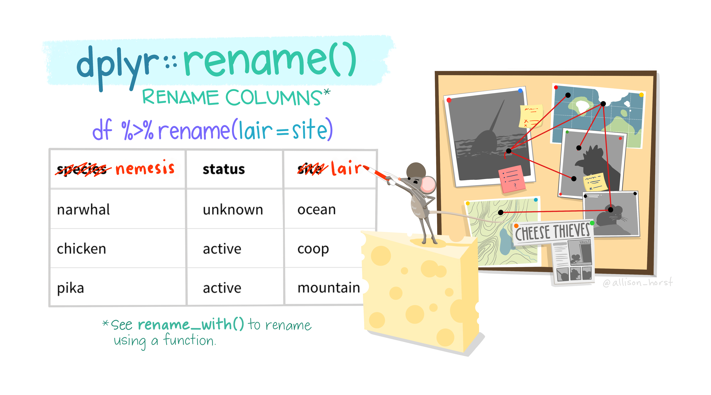
relocate()
Change column order
Rows: 344
Columns: 9
$ species <fct> Adelie, Adelie, Adelie, Adelie, Adelie, Adelie, Adel~
$ island <fct> Torgersen, Torgersen, Torgersen, Torgersen, Torgerse~
$ ID <int> 1, 2, 3, 4, 5, 6, 7, 8, 9, 10, 11, 12, 13, 14, 15, 1~
$ bill_length_mm <dbl> 39.1, 39.5, 40.3, NA, 36.7, 39.3, 38.9, 39.2, 34.1, ~
$ bill_depth_mm <dbl> 18.7, 17.4, 18.0, NA, 19.3, 20.6, 17.8, 19.6, 18.1, ~
$ flipper_length_mm <int> 181, 186, 195, NA, 193, 190, 181, 195, 193, 190, 186~
$ body_mass_g <int> 3750, 3800, 3250, NA, 3450, 3650, 3625, 4675, 3475, ~
$ sex <fct> male, female, female, NA, female, male, female, male~
$ year <int> 2007, 2007, 2007, 2007, 2007, 2007, 2007, 2007, 2007~
Data wrangling: group calculation
Create new columns that are the result of calculations performed on groups of data
group_by()
group_by() & ungroup()
Group by one or more variables
Let’s take a look
It looks almost the same as the original tibble
Notice the extra “Group” info
# A tibble: 344 x 8
species island bill_length_mm bill_depth_mm flipper_~1 body_~2 sex year
<fct> <fct> <dbl> <dbl> <int> <int> <fct> <int>
1 Adelie Torgersen 39.1 18.7 181 3750 male 2007
2 Adelie Torgersen 39.5 17.4 186 3800 fema~ 2007
3 Adelie Torgersen 40.3 18 195 3250 fema~ 2007
4 Adelie Torgersen NA NA NA NA <NA> 2007
5 Adelie Torgersen 36.7 19.3 193 3450 fema~ 2007
6 Adelie Torgersen 39.3 20.6 190 3650 male 2007
7 Adelie Torgersen 38.9 17.8 181 3625 fema~ 2007
8 Adelie Torgersen 39.2 19.6 195 4675 male 2007
9 Adelie Torgersen 34.1 18.1 193 3475 <NA> 2007
10 Adelie Torgersen 42 20.2 190 4250 <NA> 2007
# ... with 334 more rows, and abbreviated variable names 1: flipper_length_mm,
# 2: body_mass_g# A tibble: 344 x 8
# Groups: species, island [5]
species island bill_length_mm bill_depth_mm flipper_~1 body_~2 sex year
<fct> <fct> <dbl> <dbl> <int> <int> <fct> <int>
1 Adelie Torgersen 39.1 18.7 181 3750 male 2007
2 Adelie Torgersen 39.5 17.4 186 3800 fema~ 2007
3 Adelie Torgersen 40.3 18 195 3250 fema~ 2007
4 Adelie Torgersen NA NA NA NA <NA> 2007
5 Adelie Torgersen 36.7 19.3 193 3450 fema~ 2007
6 Adelie Torgersen 39.3 20.6 190 3650 male 2007
7 Adelie Torgersen 38.9 17.8 181 3625 fema~ 2007
8 Adelie Torgersen 39.2 19.6 195 4675 male 2007
9 Adelie Torgersen 34.1 18.1 193 3475 <NA> 2007
10 Adelie Torgersen 42 20.2 190 4250 <NA> 2007
# ... with 334 more rows, and abbreviated variable names 1: flipper_length_mm,
# 2: body_mass_gUse with mutate()
Calculate the difference between flipper length and their species means
penguins %>%
group_by(species) %>%
mutate(flipper_lengh_dif = flipper_length_mm - mean(flipper_length_mm, na.rm = TRUE)) # A tibble: 344 x 9
# Groups: species [3]
species island bill_length_mm bill_d~1 flipp~2 body_~3 sex year flipp~4
<fct> <fct> <dbl> <dbl> <int> <int> <fct> <int> <dbl>
1 Adelie Torgersen 39.1 18.7 181 3750 male 2007 -8.95
2 Adelie Torgersen 39.5 17.4 186 3800 fema~ 2007 -3.95
3 Adelie Torgersen 40.3 18 195 3250 fema~ 2007 5.05
4 Adelie Torgersen NA NA NA NA <NA> 2007 NA
5 Adelie Torgersen 36.7 19.3 193 3450 fema~ 2007 3.05
6 Adelie Torgersen 39.3 20.6 190 3650 male 2007 0.0464
7 Adelie Torgersen 38.9 17.8 181 3625 fema~ 2007 -8.95
8 Adelie Torgersen 39.2 19.6 195 4675 male 2007 5.05
9 Adelie Torgersen 34.1 18.1 193 3475 <NA> 2007 3.05
10 Adelie Torgersen 42 20.2 190 4250 <NA> 2007 0.0464
# ... with 334 more rows, and abbreviated variable names 1: bill_depth_mm,
# 2: flipper_length_mm, 3: body_mass_g, 4: flipper_lengh_difUse with summarize()
Find the mean bill length of each penguin species
You can do:
[1] 38.79139[1] 48.83382[1] 47.50488Use with summarize()
summarise() and summarize() are synonyms.
It’s works the same as specify .by inside summarize()
Use with summarize()
You can summarize multiple values at the same time
penguins %>%
group_by(species) %>%
summarize(count = n(),
islands_n = n_distinct(island),
flipper_length_mean = mean(flipper_length_mm, na.rm = TRUE),
flipper_length_sd = sd(flipper_length_mm, na.rm = TRUE))# A tibble: 3 x 5
species count islands_n flipper_length_mean flipper_length_sd
<fct> <int> <int> <dbl> <dbl>
1 Adelie 152 3 190. 6.54
2 Chinstrap 68 1 196. 7.13
3 Gentoo 124 1 217. 6.48Use with slice_sample()
Use stratified sampling to select 10 individuals from each species
It works the same as specify by inside slice()
Your turn
Calculate the number of observations in each year
Calculate the SD of the flipper length in each year
# A tibble: 3 x 3
year n flipper_length_sd
<int> <int> <dbl>
1 2007 110 13.9
2 2008 114 13.9
3 2009 120 13.7Your turn
Calculate the number of observations in each year
Calculate the SD of the flipper length in each year
Data wrangling: reshape
pivot_longer()pivot_wider()
pivot_longer()
# A tibble: 18 x 11
religion `<$10k` $10-2~1 $20-3~2 $30-4~3 $40-5~4 $50-7~5 $75-1~6 $100-~7
<chr> <dbl> <dbl> <dbl> <dbl> <dbl> <dbl> <dbl> <dbl>
1 Agnostic 27 34 60 81 76 137 122 109
2 Atheist 12 27 37 52 35 70 73 59
3 Buddhist 27 21 30 34 33 58 62 39
4 Catholic 418 617 732 670 638 1116 949 792
5 Don’t know/r~ 15 14 15 11 10 35 21 17
6 Evangelical ~ 575 869 1064 982 881 1486 949 723
7 Hindu 1 9 7 9 11 34 47 48
8 Historically~ 228 244 236 238 197 223 131 81
9 Jehovah's Wi~ 20 27 24 24 21 30 15 11
10 Jewish 19 19 25 25 30 95 69 87
11 Mainline Prot 289 495 619 655 651 1107 939 753
12 Mormon 29 40 48 51 56 112 85 49
13 Muslim 6 7 9 10 9 23 16 8
14 Orthodox 13 17 23 32 32 47 38 42
15 Other Christ~ 9 7 11 13 13 14 18 14
16 Other Faiths 20 33 40 46 49 63 46 40
17 Other World ~ 5 2 3 4 2 7 3 4
18 Unaffiliated 217 299 374 365 341 528 407 321
# ... with 2 more variables: `>150k` <dbl>, `Don't know/refused` <dbl>, and
# abbreviated variable names 1: `$10-20k`, 2: `$20-30k`, 3: `$30-40k`,
# 4: `$40-50k`, 5: `$50-75k`, 6: `$75-100k`, 7: `$100-150k`pivot_longer()
# A tibble: 180 x 3
religion income count
<chr> <chr> <dbl>
1 Agnostic <$10k 27
2 Agnostic $10-20k 34
3 Agnostic $20-30k 60
4 Agnostic $30-40k 81
5 Agnostic $40-50k 76
6 Agnostic $50-75k 137
7 Agnostic $75-100k 122
8 Agnostic $100-150k 109
9 Agnostic >150k 84
10 Agnostic Don't know/refused 96
# ... with 170 more rowspivot_wider()
pivot_wider()
# A tibble: 19 x 12
fish Release I80_1 Lisbon Rstr Base_TD BCE BCW BCE2 BCW2 MAE MAW
<fct> <int> <int> <int> <int> <int> <int> <int> <int> <int> <int> <int>
1 4842 1 1 1 1 1 1 1 1 1 1 1
2 4843 1 1 1 1 1 1 1 1 1 1 1
3 4844 1 1 1 1 1 1 1 1 1 1 1
4 4845 1 1 1 1 1 NA NA NA NA NA NA
5 4847 1 1 1 NA NA NA NA NA NA NA NA
6 4848 1 1 1 1 NA NA NA NA NA NA NA
7 4849 1 1 NA NA NA NA NA NA NA NA NA
8 4850 1 1 NA 1 1 1 1 NA NA NA NA
9 4851 1 1 NA NA NA NA NA NA NA NA NA
10 4854 1 1 NA NA NA NA NA NA NA NA NA
11 4855 1 1 1 1 1 NA NA NA NA NA NA
12 4857 1 1 1 1 1 1 1 1 1 NA NA
13 4858 1 1 1 1 1 1 1 1 1 1 1
14 4859 1 1 1 1 1 NA NA NA NA NA NA
15 4861 1 1 1 1 1 1 1 1 1 1 1
16 4862 1 1 1 1 1 1 1 1 1 NA NA
17 4863 1 1 NA NA NA NA NA NA NA NA NA
18 4864 1 1 NA NA NA NA NA NA NA NA NA
19 4865 1 1 1 NA NA NA NA NA NA NA NAData wrangling: combining two tibbles
left_join()right_join()full_join()
Data wrangling cheat sheet
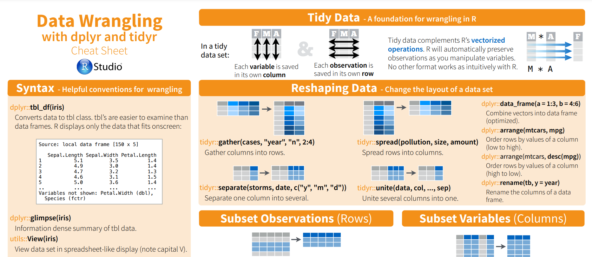Lab assignment
Your task
We have one set of dirty data and another set of cleaned data. Your task is to wrangle the dirty data set and make it the same as the cleaned data set. Both data set were provided on Moodle.
Load the NRES776_dirty_lab3.csv and NRES776_cleaned_lab3.csv
Here are some lines might be helpful for you to get started.
The goal is to get the
all.equal()to returnTRUE!
### Library, add any libraries you might need
library(tidyverse)
library(here)
### Read in data sets
dirty <- read_csv("data", "NRES776_dirty_lab3.csv")
cleaned <- read_csv(here("data", "NRES776_cleaned_lab3.csv"))
### Data wrangling code here
my_cleaned_dataset <- dirty %>%
…
### Final check
all.equal(target = cleaned, current = my_cleaned_dataset, check.attributes = FALSE)Hints
NRES776_cleaned_lab3.csv
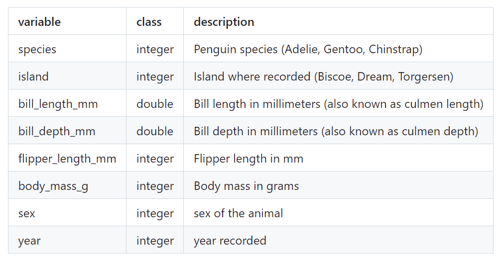Hints
NRES776_dirty_lab3.csv
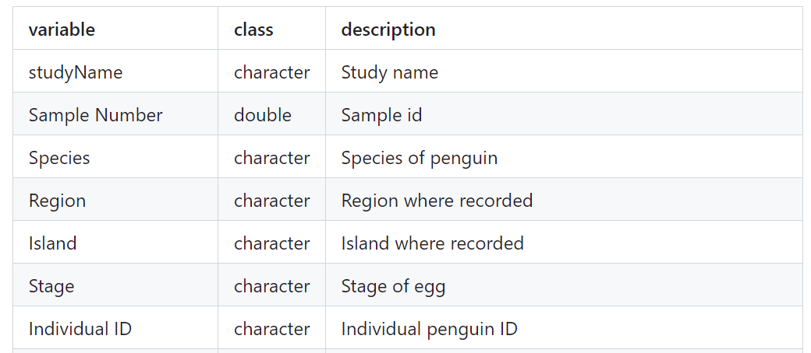Hints
NRES776_dirty_lab3.csv
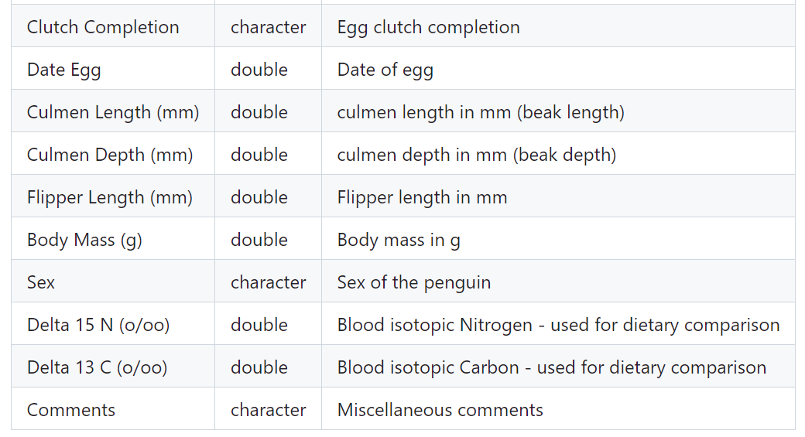Submission
Due next Wednesday 23:59 pm, Moodle
Evaluation
File name and type (NRES776_firstname_lastname_lab_3.R) (20%)
Accuracy of code (60%)
Readability, efficiency, and annotation of code (20%)
Use of ChatGPT, stackflow, or…
Copy/Paste is your friend! (and never apologize for it!) 😍
But be sure you understand why the codes are doing what they are doing 🧑🎓
So that you form some new neuron connections in the brain 🧠
Quiet/Noisy room

Artwork by @allison_horst
Wrap up
Before we meet again
Have a nice food intake
Have a nap
Have a good break
Next time
- Will see you in 1.5 hours on zoom!